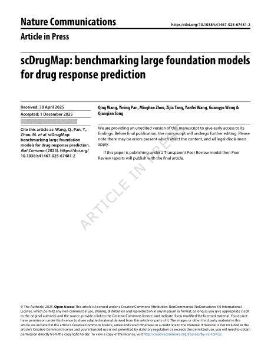
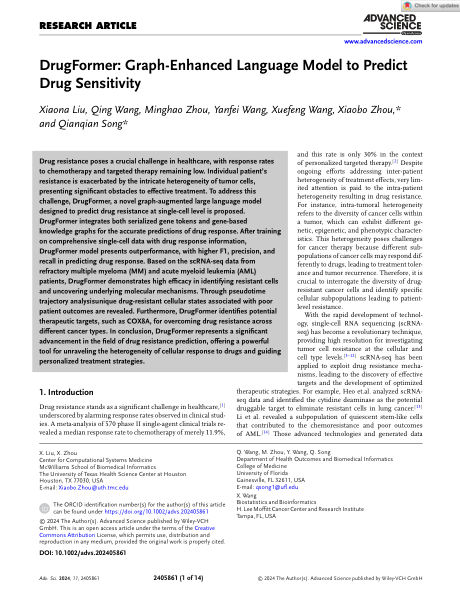
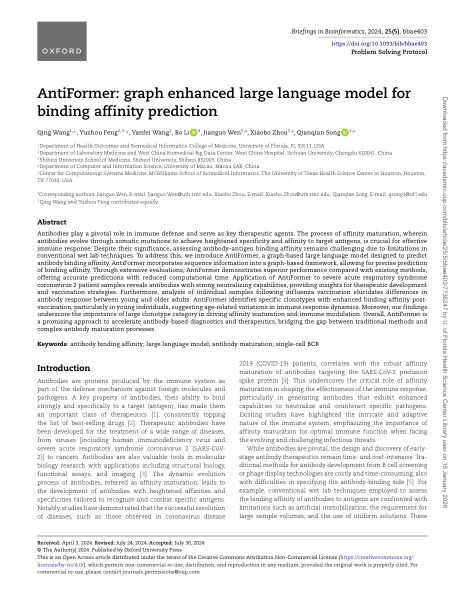
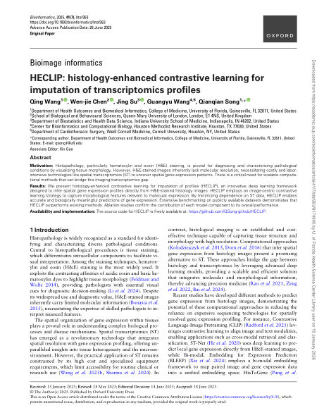

Ph.D. Student in Biomedical Informatics
Department of Health Outcomes & Biomedical Informatics, College of Medicine, University of Florida
📧 wang.qing@ufl.edu · ☎️ (+1) 352-256-3237
I am a Ph.D. student in Biomedical Informatics at the University of Florida, advised by Prof. Qianqian Song. My research centers on AI for Science — building biomedical foundation models, large language models, and agent / RAG-based systems for drug discovery, single-cell analysis, electronic health records, and medical imaging.
Before joining UF, I received my B.S. in Internet of Things Engineering from Zhejiang Wanli University (2021), advised by Prof. Jiong Shi, and my M.S. in Computer Science from Zhejiang Normal University (2024) under Prof. Jia Zhu, where — as a member of the Zhejiang Key Laboratory of Intelligent Education Technology and Application — I was also guided by Prof. Changqin Huang and Prof. Ming Li. In summer 2023 I visited Prof. Daniel E. Acuna's lab in the Department of Computer Science at CU Boulder.
Since 2022 I have (co-)authored 17 papers — including 7 first / co-first-author works — in venues such as Nature Communications, Advanced Science, Briefings in Bioinformatics, and Bioinformatics, and I hold one China patent. I serve as a reviewer for 30+ international journals and conferences (e.g., Medical Image Analysis, Genome Biology, npj Precision Oncology, Neural Networks) and as a Program Committee member for ICIBM 2024–2026.



